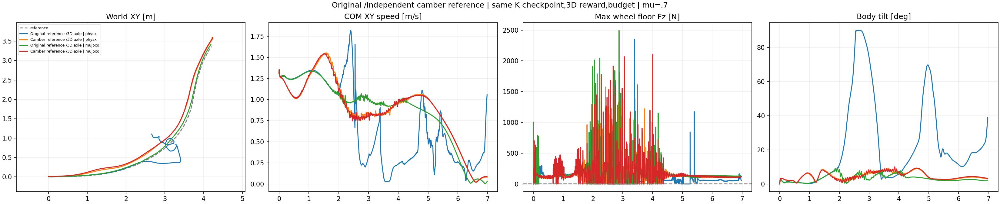
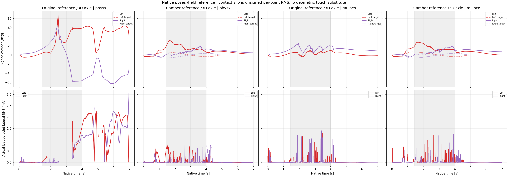
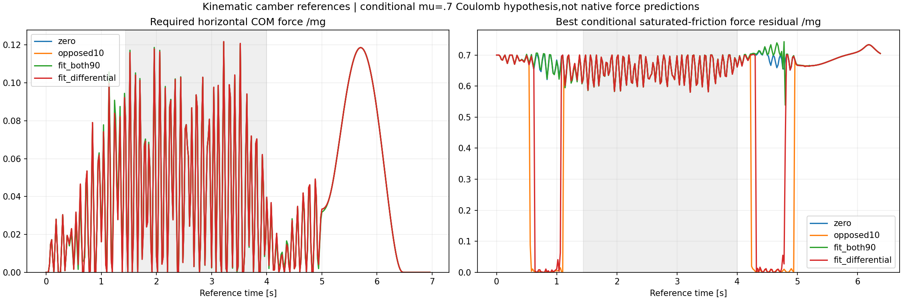

The new camber-reference actor does not pass the complete nominal task across both engines.No new friction sweep is launched.
| Cell | Core XY RMSE(m) | Speed/reference | Beta RMSE(deg) | Any-wheel support(%) | Max gap(ms) | HF/original | Failed checks/9 |
|---|---|---|---|---|---|---|---|
| Original reference /3D axle | physx | 0.5676 | 0.714 | 81.78 | 82.61 | 882.5 | 0.404 | 8 |
| Camber reference /3D axle | physx | 0.1555 | 0.963 | 6.28 | 88.80 | 52.5 | 0.643 | 3 |
| Original reference /3D axle | mujoco | 0.0772 | 0.987 | 2.22 | 89.38 | 55.0 | 0.716 | 3 |
| Camber reference /3D axle | mujoco | 0.1669 | 0.950 | 5.27 | 86.89 | 52.5 | 0.662 | 5 |
Core1.44–4.00s;whole tracking0–6.96s;support0.02–6.96s at2.5ms native samples.At least one actual upward wheel-ground normal force must exceed5N at every sample.One wheel may lift.All original nine gates remain:core/whole XY RMSE≤0.15m,peak≤0.30m;core speed ratio0.95–1.10;nonzero-beta RMSE≤10deg;core angular-XY10–100Hz RMS≤0.7 of the original same-engine PPO;100% support and zero longest gap.No absolute-height or camber gate is added.Bearing after a fall or quieting after stopping does not establish success.
control_physx. At3.00s the old-reference3D-axis actor is almost sideways with wheels above the body.At4.00s it is low and off the route;its6.96s endpoint is far from the target.Lower angular HF after this fall is not a task improvement.
camber_physx. The new-reference actor remains upright in the inspected core and tail poses and follows the turn much more closely than the old3D control,but has visible sampled support gaps and a lateral path offset.It does not pass the0.15m core RMSE or continuous-support criteria.
control_mujoco. The old-reference3D actor is upright through the inspected turn and tail;recorded support gaps and the HF check remain failures.
camber_mujoco. The new-reference actor remains upright in the inspected core and tail poses,but its path is laterally displaced and tracking is worse than the old3D MuJoCo control.Measured support gaps remain;neither geometric wheel proximity nor upright appearance proves continuous bearing.


| Case | Wheel | Loaded camber target RMSE(deg) | Loaded-point lateral RMS median(m/s) | Loaded wheel samples | Identified strong-point samples |
|---|---|---|---|---|---|
| control_physx | left | 46.7897 | 0.6160 | 378 | 378 |
| control_physx | right | 44.4202 | 0.0113 | 657 | 657 |
| camber_physx | left | 17.7142 | 0.0352 | 417 | 417 |
| camber_physx | right | 9.4490 | 0.0050 | 672 | 672 |
| control_mujoco | left | 5.0747 | 0.0066 | 269 | 269 |
| control_mujoco | right | 15.8948 | 0.0039 | 741 | 741 |
| camber_mujoco | left | 17.2543 | 0.0055 | 299 | 299 |
| camber_mujoco | right | 10.4488 | 0.0066 | 633 | 633 |
Camber is asin(worldZ dot authored wheel local+Y axle).Targets use the actual held policy clock:native samples1–8 follow frame0,9–16 frame1,and so on.No target interpolation is used.Loaded camber uses summed upward wheel normal force above5N.Contact-slip statistics additionally require an individual real ground point with normal force above5N.The recorded slip is the normal-force-weighted RMS over such material points;it is unsigned.A zero-contact placeholder is never counted as rolling.Ideal reference point velocity and actual multi-point RMS are different estimators,and their signed errors cannot be reconstructed from these records.
The new actor remains upright in both inspected native replays.The PhysX core XY RMSE improves from0.5676 to0.1555m,but MuJoCo worsens from0.0772 to0.1669m.Both new episodes still have52.5ms maximum support gaps.The new loaded-camber target RMSE is17.71/9.45deg(left/right)in PhysX and17.25/10.45deg in MuJoCo,against reference peak camber about6.95deg.The candidate therefore does not faithfully reproduce the intended camber trajectories.Loaded-point lateral RMS medians are0.0352/0.0050m/s in PhysX and0.0055/0.0066m/s in MuJoCo;these measurements do not establish the intended sustained large side sliding.
The control is the completed3D-axis actor9604d4e75b176cbfb4c8812f9ced900c360ccb984f5325c90be1e1e81425b9cc from the preceding experiment.The candidate starts independently from the same original K full checkpoint8cb011e4c5e2a33a685bc58280df410141ab99aa245892042762b8956595fe5a,with identical actor,critic and normalizers,fresh Adam,fixed learning rate0.0001 and clip0.1.Both use512×24×200=2,457,600 additional transitions,14,745,600 cumulative.This is warm refinement,not scratch learning and not a continuation of the failed3D control actor.
All15 reward definitions and weights,contact sampling and formula,DR,observations,actuators and clocks are unchanged.The original native cylindrical wheel colliders are retained;no new geometry or tire-force law is introduced.Only the complete motion NPZ is replaced by the independent-camber kinematic reference0c8f2cfc2876bbd103bad206e708d91bf6753f8faa75c3107b0ec37c56c448b9.The new reference includes independently tilted wheel planes,reconstructed hip/knee poses and velocities,wheel-center positions and near-rolling spin.The body XY,speed,yaw and nominal reference Z remain the original car mapping;no absolute-height policy reward is added.Wheel XY targets use the newly generated positions.
The reference targets approximately110% of the original signed surface lateral speed on the left and90% on the right over the turn core.Peak camber is about6.95deg with opposite signs between wheels.Initial poses agree to floating-point precision;the regenerated initial wheel velocities differ by about0.00064rad/s.This is disclosed as part of the motion intervention.Native initial observable states are separately compared between the new PhysX and MuJoCo evaluations.Geometric touch in the reference never substitutes for measured support.
The offline fully-sliding isotropic Coulomb hypothesis at mu0.7 gives a best core force residual around0.654mg for both the zero-camber and independently fitted references,despite the small kinematic lateral-velocity target error.The original path asks for only about0.0466g median horizontal COM acceleration.This calculation allows any nonnegative wheel load split but omits angular-momentum constraints,static adhesion,tire elasticity and native solver behavior.It is not a PhysX force prediction or task-impossibility proof;policies can depart from reference wheel motions while tracking the body task.

Conditional force assumptions and statistics · Reference generator and kinematic-only results.
Nine CPU tests pass.Native smoke and its independent CPU checkpoint/export proof precede formal training.All six complete reference tensor streams are compared bit-for-bit after FP32 conversion and named native reordering,both at startup and final training audit.The new motion SHA is bound in the declared contract before simulator startup,then independently checked in the trained export.Old source files and old input pins remain unchanged;the native input-contract clone explicitly records its counted motion-pin replacement.
The initial3/5/4-only queue was confirmed to have launched no training or evaluation child.It was closed by verified signals to those two owned idle waiters only,with before/after process identities retained.A new work directory adds GPU0 as a prospective fallback after3/5/4.All GPU launches still require full fresh NVML compute/graphics,memory and PCI auditing.One owned GPU job runs at a time;no other user's process is stopped or shared.
Training and validation use native400Hz physics,50Hz held actions,original leg PD500/10 and motor limits.Training retains the same friction[0.3,1.2],encoder,COM and push DR.Native nominal validation fixes mu0.7 and disables DR/noise,with one actor across both engines and no hidden resets.All350 video frames decode;original opaque native poses and common fixed relative cameras are verified.Stills2.24/3.00/4.00/6.96s and the diagnostic plots were inspected;full manual playback is not claimed.Single-seed episodes do not establish robustness.
Metrics,actors and matched protocol proof · Camber,slip and body-integrity audit · Completed evidence hashes · Independent replay verification · Still review · Final owned-process audit · Preserved queue migration · CPU tests.
Protocol · Trainer · Strict verifier · Native evaluator · Analyzer · Renderer.Exact existing asset/source paths and argv are preserved in completed launch records.No physical assets,weights,credentials or native libraries are uploaded or included in the collection.